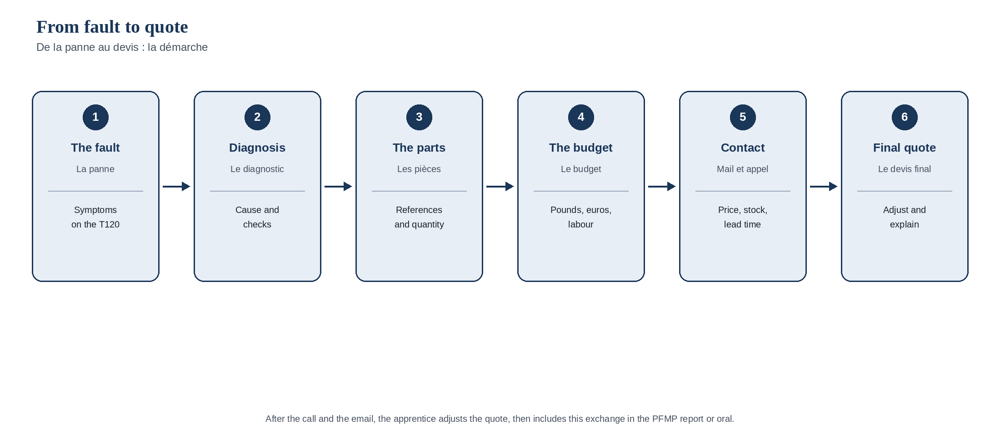

Duke Humfrey's Library, Oxford. Photo: Diliff. CC BY-SA 3.0, Wikimedia Commons.
Baccalauréat professionnel · English · Lycée professionnel
From Fault to Quote
From Fault to Quote. Séquence d’anglais A2-B1 pour le baccalauréat professionnel Maintenance des véhicules, option motocycles. Volet anglais d’un travail transversal avec le compte rendu de PFMP.
Fernand Léger (1881-1955), Le Mécanicien, 1920. Huile sur toile. National Gallery of Canada, Ottawa. Domaine public (l’artiste est mort en 1955). Image via Wikimedia Commons. Un mécanicien au travail : c’est aussi le point de départ de cette séquence, avant l’échange avec la maison mère, en Angleterre.
Travail transversal Lettres et anglais
Cette séquence est le volet anglais d’un projet mené avec le compte rendu de PFMP. On y retrouve le même élève fictif, Lucas Martin, la même concession, Les Ateliers du Lauragais, à Saint-Orens-de-Gameville, le même tuteur, Julien Morel, et la même Triumph Bonneville T120.
Le volet Lettres apprend à rendre compte de la période, par écrit puis à l’oral. Le volet anglais part d’une panne constatée pendant la révision, jusqu’à l’échange avec Triumph, à Hinckley, et jusqu’au devis ajusté. Dans la tâche finale, l’élève réinvestit cet échange dans son compte rendu ou dans sa prise de parole.
Comment, à partir d’une panne constatée sur une motocyclette, décrire le diagnostic en anglais, identifier les pièces à commander, établir un budget prévisionnel, puis obtenir de la maison mère, par mail et par téléphone, les renseignements qui permettent d’ajuster le devis ?
Objectifs
La séquence s’appuie sur le programme d’enseignement de langues vivantes des classes préparant au baccalauréat professionnel : arrêté du 3 avril 2019, publié au Journal officiel du 9 avril 2019 et au Bulletin officiel spécial n° 5 du 11 avril 2019 (NOR MENE1908627A). Le premier objectif de ce programme est l’acquisition des moyens linguistiques permettant de communiquer avec des collègues, des partenaires ou des clients étrangers. Les cinq activités langagières du CECRL y sont travaillées, avec une place importante laissée à l’oral, sans négliger l’écrit.
Le niveau visé ici est A2-B1. À l’examen du baccalauréat professionnel, les niveaux attendus sont B1+ pour la langue vivante A et A2+ pour la langue vivante B.
Décrire une panne : symptômes, diagnostic et cause (expression orale et écrite).
Mobiliser un lexique technique professionnel (pièces, références, devis, délais).
Établir un budget prévisionnel : prix en livres sterling, conversion en euros, port, main-d’œuvre, totaux hors taxe et toutes taxes comprises.
Rédiger un courriel professionnel et comprendre la réponse du service pièces.
Conduire un appel téléphonique : épeler, confirmer des prix, des dates et des délais, faire reformuler.
Ajuster le devis, puis réinvestir l’échange dans le compte rendu de PFMP ou à l’oral.
La démarche

From Fault to Quote : on ne contacte Triumph qu’après avoir nommé la panne, identifié les pièces et préparé un budget prévisionnel. Schéma original.
La situation
Pendant sa PFMP aux Ateliers du Lauragais, Lucas Martin participe à la révision d’une Triumph Bonneville T120. Le client, M. Alain Costa, personnage fictif, avait pris rendez-vous pour l’entretien prévu. Il signalait aussi des à-coups à faible vitesse, un bruit métallique à l’arrière, et un frein avant moins mordant.
Avec Julien Morel, l’élève constate l’usure des deux bougies, d’un kit chaîne et pignons arrivé en fin de course, et des plaquettes avant, des deux côtés. Le filtre à huile doit aussi être remplacé, comme le prévoit l’entretien. Le kit chaîne n’est pas en stock. Il faut donc écrire et téléphoner au service pièces de Triumph Motorcycles, à Hinckley, dans le Leicestershire, pour vérifier les prix, la disponibilité et les délais, puis ajuster le devis remis au client.
L’entreprise, les personnes, l’établissement, les adresses de courriel, les numéros de téléphone et les montants utilisés pour l’exercice sont fictifs ou indicatifs. Les références de pièces correspondent à des numéros du catalogue constructeur, relevés chez des revendeurs ; les prix sont des prix indicatifs, arrondis, relevés en novembre 2026.
Tableau des lessons
Lesson
Titre
Ce que l’élève fait
Language activities
1
The fault
Lit la situation, nomme les symptômes, le diagnostic et la cause, complète une fiche en anglais.
Complète un tableau de devis : livres, euros, port, main-d’œuvre, totaux hors taxe et TTC.
CE, EE
4
A professional email
Étudie un modèle, complète un courriel, lit la réponse du service pièces.
CE, EE
5
A call to Hinckley
S’entraîne à l’appel : dialogue modèle, formules, jeu de rôle. Une fiche complémentaire, Sounding natural at the workshop, travaille le registre : en classe, entre collègues, avec le client ou le fournisseur.
CO, EOI
6
Final task
Commande les pièces (mail et appel simulé), ajuste le devis, puis intègre l’échange au compte rendu ou à l’oral de PFMP.
EE, EOI, EOC
Six lessons courtes, conçues pour un horaire de lycée professionnel. La tâche finale relie explicitement l’anglais et les Lettres.
Assessments
Une grille accompagne la tâche finale. Elle porte sur la clarté du diagnostic, l’exactitude des pièces et des quantités, la cohérence du budget, la qualité du courriel, la tenue de l’appel (épellation, prix, délais, reformulation), et le réinvestissement dans le compte rendu ou l’oral de PFMP. Les corrigés se trouvent à la fin du document téléchargeable.
Sounding natural at the workshop
Fiche complémentaire, à utiliser avec la lesson 5, A call to Hinckley. Une phrase peut être juste, et pourtant un peu raide. À l’atelier, on ne parle pas de la même façon à Julien, à un client, ou à Emma Whittaker, au service pièces de Triumph, à Hinckley.
La fiche propose dix situations de l’atelier et de l’appel : ne pas connaître une référence, faire répéter un numéro de pièce, faire patienter, demander de préciser, refuser poliment un délai, être débordé, accepter un prix, remercier, épeler une référence, confirmer une commande. Trois colonnes : l’anglais de classe, la phrase entre collègues, puis la phrase avec le client ou le fournisseur. Un exercice de transformation, avec son corrigé, permet de réécrire six phrases. Niveau A2-B1.
Situation
En classejuste, un peu raide
Entre collèguesà l’atelier
Avec le client ou le fournisseurM. Costa ou Triumph, à Hinckley
Faire répéter un numéro de pièceYou need a part number said again
Can you repeat the part number, please?
Sorry, what was that number again?
Could you go through the reference once more, a little more slowly, please?
Refuser poliment un délaiA lead time does not work
I cannot accept this delay. It is too long.
Five days is tight for the customer. We should let him know.
I’m afraid five working days may be too long for our customer. Is an earlier dispatch possible?
Confirmer une commandeYou confirm an order
I want to order these parts.
Right, let’s place the order.
I can confirm the order for the five items we discussed. We will also confirm it by email.
Trois situations tirées de la fiche. Les sept autres, l’exercice et le corrigé se trouvent dans le document téléchargeable. Une affiche A4, à afficher en classe, reprend huit de ces situations en trois colonnes.
Downloads
From Fault to Quote, bac pro motocycles (lessons, tâche finale, grille et corrigés)
Le livret de la séquence fait 18 pages. La fiche complémentaire en fait 4, avec le tableau des registres, l’exercice et le corrigé. Une affiche A4 reprend huit situations en trois colonnes. Les prix du livret sont des exemples pédagogiques, indicatifs, relevés en novembre 2026, puis arrondis. Ils ne constituent pas un tarif officiel de Triumph ni d’une concession.
QR code de cette page : https://itineraires-destinations.fr/from-fault-to-quote/
Point de vigilance. Les adresses, les numéros, les interlocuteurs et l’entreprise d’accueil sont fictifs. On n’écrit pas à un service réel pour cet exercice. Les opérations décrites illustrent une situation de formation ; elles ne constituent pas une procédure technique à appliquer sur un véhicule.
2. Lessons minutées (55 minutes, minutées sur 52)
Lesson 1. The fault
Minutes
Étape
Ce que font les élèves
Activité
0 à 5
Mise en route
Le tableau de Fernand Léger, Le Mécanicien : un mot chacun.
PO
5 à 17
Lecture
La situation : Lucas, la Triumph Bonneville T120, le client.
CE
17 à 25
Écoute
L'enseignante lit le signalement du client deux fois ; les élèves notent les symptômes.
CO
25 à 35
Étude de la langue
Décrire une panne : présent simple et present perfect (The engine misfires. The pads have worn out).
35 à 47
Fiche en anglais
Symptômes, diagnostic, cause ; puis présentation orale en binôme.
PE, PI
47 à 52
Lesson summary and devoirs
52 à 55
Marge
Rangement, sortie de la salle. La lesson dure 55 minutes, minutée sur 52.
Lesson summary : Symptom: … Diagnosis: … Cause: … (trois lignes sur la Bonneville)
Devoirs : Apprendre six mots de la panne.
Plan B : Fiche symptômes, diagnostic, cause en classe entière ; trace dictée.
Lesson 2. Building your vocabulary
Minutes
Étape
Ce que font les élèves
Activité
0 à 5
Rappel
Six mots de la lesson 1.
PO
5 à 20
Lexique illustré
Pièces, références, stock, délai, devis : association image et mot.
CE
20 à 30
Prononciation
Épeler une référence, lire des nombres (O as in Oscar).
CO, PO
30 à 42
Jeu en binôme
A donne une référence, B la note et la relit.
PI
42 à 47
Écrit court
Cinq phrases avec les mots du jour.
PE
47 à 52
Lesson summary and devoirs
52 à 55
Marge
Rangement, sortie de la salle. La lesson dure 55 minutes, minutée sur 52.
Lesson summary : spark plug, chain and sprocket kit, brake pads, oil filter, part number, lead time, quote
Devoirs : Apprendre l'alphabet radio de A à M.
Plan B : Jeu des références en classe entière.
Lesson 3. The provisional budget
Minutes
Étape
Ce que font les élèves
Activité
0 à 5
Rappel
Épeler deux références.
PO
5 à 15
Lecture
Le tableau de devis : livres, euros, port, main-d'œuvre, HT, TTC.
Compléter le devis, puis le présenter en anglais à un camarade.
PE, PI
42 à 47
Vérification
Correction collective.
CO
47 à 52
Lesson summary and devoirs
52 à 55
Marge
Rangement, sortie de la salle. La lesson dure 55 minutes, minutée sur 52.
Lesson summary : The total excluding VAT is … The total including VAT is …
Devoirs : Refaire le devis avec un autre taux de change.
Plan B : Devis complété en classe entière au tableau.
Lesson 4. A professional email
Minutes
Étape
Ce que font les élèves
Activité
0 à 5
Rappel
Lire un total à voix haute.
PO
5 à 17
Modèle
Étude d'un courriel professionnel.
CE
17 à 27
Étude de la langue
Formules du courriel (I am writing to…, Could you confirm…, Kind regards).
27 à 42
Rédaction
Compléter le courriel de commande.
PE
42 à 47
Réponse du service pièces
Lecture de la réponse, deux questions.
CE
47 à 52
Lesson summary and devoirs
52 à 55
Marge
Rangement, sortie de la salle. La lesson dure 55 minutes, minutée sur 52.
Lesson summary : Formules d'ouverture et de clôture d'un courriel professionnel.
Devoirs : Réécrire le courriel au propre.
Plan B : Courriel complété en classe entière.
Lesson 5. A call to Hinckley
Minutes
Étape
Ce que font les élèves
Activité
0 à 5
Rappel
Trois formules du courriel.
PO
5 à 15
Écoute
Le dialogue modèle, deux écoutes.
CO
15 à 25
Étude de la langue
Registre : fiche Sounding natural at the workshop.
25 à 45
Jeu de rôle
Appel au service pièces, puis échange des rôles.
PI
45 à 47
Retour
Deux conseils.
PO
47 à 52
Lesson summary and devoirs
52 à 55
Marge
Rangement, sortie de la salle. La lesson dure 55 minutes, minutée sur 52.
Lesson summary : Can you repeat the part number, please? I can confirm the order for…
Devoirs : S'entraîner à l'appel à la maison (enregistrement).
Plan B : Lecture du dialogue modèle à deux voix, puis trace.
Lesson 6. Final task
Minutes
Étape
Ce que font les élèves
Activité
0 à 3
Consignes
La tâche et la grille.
CE
3 à 18
Courriel
Commande des pièces.
PE
18 à 38
Appel simulé
Passages en binôme devant l'enseignante.
PI
38 à 48
Devis ajusté
Corriger le devis après l'appel.
PE
48 à 52
Ramassage
52 à 55
Marge
Rangement, sortie de la salle. La lesson dure 55 minutes, minutée sur 52.
Lesson summary : Pas de trace écrite : tâche finale.
Devoirs : Intégrer l'échange au compte rendu de PFMP (volet Lettres).
Plan B : Courriel et devis seulement ; l'appel au début de la lesson suivante.
If a student cannot attend class or is in hospital
À placer dans un onglet à part, visible par l'élève. Chaque lesson se fait en 30 à 40 minutes, seul, avec la page de la séquence ouverte (documents en libre accès). Une version courte de 15 minutes est prévue pour les jours de fatigue. Le travail se dépose sur l'ENT ou se rend au retour. L'enseignante corrige et renvoie un mot.
Règle pour l'élève : « Fais ce que tu peux, dans l'ordre. Si tu es fatigué, fais seulement la version courte. Rien n'est perdu : on rattrape ensemble au retour. »
Lesson 1. The fault
Je découvre (5 min). Lis la situation (Lucas, la Bonneville, le client).
Je comprends (10 min). Réponds en français ou en anglais, en phrases complètes :
What does the customer report?
What do Lucas and Julien find?
Which parts must be replaced?
Étude de la langue (10 min). Present perfect : The pads have worn out. Trois phrases.
Je produis (10 min). Remplis la fiche symptômes, diagnostic, cause.
Ma trace écrite (5 min). Recopie dans ton cahier : « Symptom, diagnosis, cause (trois lignes). »
Version courte (15 min) : questions 1 et 3.
Lesson 2. Building your vocabulary
Je découvre (5 min). Ouvre le lexique illustré du livret.
Je comprends (10 min). Réponds en français ou en anglais, en phrases complètes :
Name five parts.
What is a part number?
What is a lead time?
Étude de la langue (10 min). Épeler : écris trois références avec l'alphabet radio.
Je produis (10 min). Cinq phrases avec les mots du jour.
Ma trace écrite (5 min). Recopie dans ton cahier : « Recopie la liste des pièces. »
Version courte (15 min) : question 1 et la liste.
Lesson 3. The provisional budget
Je découvre (5 min). Ouvre le tableau de devis du livret.
Je comprends (10 min). Réponds en français ou en anglais, en phrases complètes :
How much are the parts in pounds?
How much is the shipping?
What is the total including VAT?
Étude de la langue (10 min). Lis à voix haute et écris en lettres trois prix.
Je produis (10 min). Complète le devis.
Ma trace écrite (5 min). Recopie dans ton cahier : « The total excluding VAT is … The total including VAT is … »
Version courte (15 min) : questions 1 et 3.
Lesson 4. A professional email
Je découvre (5 min). Lis le modèle de courriel.
Je comprends (10 min). Réponds en français ou en anglais, en phrases complètes :
Who writes to whom?
What is asked?
How does the email end?
Étude de la langue (10 min). Formules du courriel.
Je produis (10 min). Complète le courriel de commande.
Ma trace écrite (5 min). Recopie dans ton cahier : « Formules d'ouverture et de clôture. »
Version courte (15 min) : question 2 et le courriel.
Lesson 5. A call to Hinckley
Je découvre (5 min). Lis le dialogue modèle et la fiche Sounding natural at the workshop.
Je comprends (10 min). Réponds en français ou en anglais, en phrases complètes :
What does Lucas want?
What problem comes up?
How is it solved?
Étude de la langue (10 min). Trois façons de faire répéter, du registre de classe au registre client.
Je produis (10 min). Enregistre l'appel (2 minutes) en jouant les deux rôles, ou écris-le.
Ma trace écrite (5 min). Recopie dans ton cahier : « Recopie trois formules de l'appel. »
Version courte (15 min) : questions 1 et 2.
Lesson 6. Final task
Je découvre (5 min). La tâche finale se fait à la maison : courriel, devis ajusté, enregistrement de l'appel.
Je comprends (10 min). Réponds en français ou en anglais, en phrases complètes :
Écris le courriel.
Ajuste le devis.
Enregistre l'appel.
Étude de la langue (10 min). Relis tes traces écrites.
Je produis (10 min). Courriel et enregistrement de l'appel.
Ma trace écrite (5 min). Recopie dans ton cahier : « Pas de trace écrite. »
Version courte (15 min) : le courriel seulement.
Entraînement au CCF (Terminale, Teacher version)
Rappel du format officiel (arrêté du 17 juin 2020, annexe V ; épreuve de langue vivante, bac pro, coefficient 2) :
Situation A, écrite, 1 heure au plus, en dernière année de formation : compréhension de l'oral (document de 1 min 30 au plus, entendu trois fois, une minute entre les écoutes, compte rendu en français) ; compréhension de l'écrit (document authentique inconnu de 15 lignes de 70 caractères au plus, compte rendu en français) ; expression écrite (deux sujets au choix, l'un sur la vie quotidienne, l'autre sur la vie professionnelle, 100 à 120 mots au moins selon la consigne).
Situation B, orale, 10 minutes : partie 1, expression orale en continu, 5 minutes au plus, sur un travail, un projet, un produit, un service ou une expérience professionnelle, sans lecture, notes et une image autorisées ; partie 2, interaction, 5 minutes au plus, à partir de la présentation.
En Terminale : les situations A et B ont lieu dans l'année ; ce sujet sert de blanc.
Situation A blanche, en une lesson de 52 minutes (Teacher version)
Minutes
Étape
Ce que font les élèves
Activité
0 à 2
Consignes
Les élèves lisent les trois parties et choisissent leur sujet d'expression écrite.
Lecture
2 à 17
Listening
Trois écoutes du document (1 min 30 au plus), une minute entre chaque écoute ; prise de notes ; compte rendu en français.
CO
17 à 32
Reading
Lecture du document, compte rendu en français guidé par les questions.
CE
32 à 50
Expression écrite
Un sujet au choix, 100 à 120 mots au moins.
PE
50 à 52
Ramassage
Relecture, comptage des mots, ramassage.
52 à 55
Marge
Rangement, sortie de la salle. La lesson dure 55 minutes, minutée sur 52.
Listening. document à choisir : une vidéo authentique de 1 min 30 au plus présentant l'usine Triumph de Hinckley ou un entretien de moto (chaîne officielle de Triumph Motorcycles), en libre accès.
Consigne : « Écoutez trois fois le document. Rendez compte en français de ce que vous avez compris : qui parle, de quoi, où, pourquoi, et ce que la personne pense. »
Reading. Texte d'entraînement (le jour du CCF, prendre un document authentique inconnu de 15 lignes au plus) :
Triumph Motorcycles is one of the oldest motorcycle brands in the world. The company started in Coventry, England, at the end of the nineteenth century, first making bicycles. Its first motorcycle appeared in 1902. After difficult years, the factory closed in 1983. A businessman, John Bloor, bought the brand and built a new factory in Hinckley, Leicestershire. The first new Triumph motorcycles were presented in 1990. Today, the head office and part of the production are still in Hinckley, and the bikes are sold all over the world. The Bonneville, a classic model, is named after a salt flat in Utah, in the United States, where speed records were set.
Source : texte d'entraînement écrit pour la classe, d'après l'historique publié par Triumph Motorcycles.
Consigne : « Rendez compte en français du document. Aidez-vous des questions. »
Où et quand la marque est-elle née ?
Que s'est-il passé en 1983 ?
Quel rôle joue Hinckley aujourd'hui ?
D'où vient le nom Bonneville ?
Expression écrite. Choisissez un sujet. Écrivez 100 à 120 mots au moins.
Sujet 1 (vie quotidienne) : Describe your dream motorbike or vehicle, and explain why you would like to have it.
Sujet 2 (vie professionnelle) : A customer brings his motorbike for a service. Write an email to explain what you found and what you suggest, with the price.
Situation B blanche (Teacher version)
Organisation : 10 minutes par élève (5 minutes de présentation, 5 minutes d'échange). Avec 24 élèves, prévoir 6 lessons, quatre passages par lesson. Pendant les passages, les autres élèves travaillent en autonomie au fond de la salle (fiche ci-dessous), casque ou travail écrit, sans bruit.
Minutes
Étape
Ce que font les élèves
Activité
0 à 4
Installation
Ordre de passage au tableau ; les élèves en autonomie prennent la fiche.
Lecture
4 à 15
Passage 1
5 min de présentation sans lecture, puis 5 min d'échange ; 1 min de notation.
PO, PI
15 à 26
Passage 2
Même déroulé.
PO, PI
26 à 37
Passage 3
Même déroulé.
PO, PI
37 à 48
Passage 4
Même déroulé.
PO, PI
48 à 52
Bilan collectif
Deux conseils pour la classe, sans nommer personne.
52 à 55
Marge
Rangement, sortie de la salle. La lesson dure 55 minutes, minutée sur 52.
Sujets de présentation possibles (l'élève choisit, une image et des notes autorisées, pas de texte rédigé) :
Présenter une intervention réalisée en PFMP (panne, diagnostic, réparation), une photo autorisée.
Présenter une moto ou une pièce à un client.
Présenter le devis réalisé dans la séquence et le justifier.
Questions d'échange, à adapter : « Why did you choose this? » ; « What was the most difficult part? » ; « What would you do differently? » ; « Would you recommend it to a customer? Why? » ; « What did you learn? » ; « Can you tell me more about…? »
Travail en autonomie pendant les passages : préparer sa propre fiche de présentation (5 mots clés, 3 phrases d'accroche, 1 image), puis faire les exercices d'Étude de la langue de la séquence.
Grille nationale bac pro LVA (BO n° 47 du 16 décembre 2021, annexe 4), Teacher version
Situation A, sur 12 (chaque activité de 0 à 4, demi-points possibles) :
Degré
Listening
Reading
Expression écrite
4 (4 ou 3,5)
Comprend l'essentiel des informations, perçoit la cohérence d'ensemble, identifie le point de vue ou les intentions
Mêmes critères sur le document écrit
S'exprime clairement, même avec des erreurs dans les structures complexes ; lexique varié ; expose avantages ou inconvénients ; justifie
3 (3 ou 2,5)
Relève certains des éléments porteurs de sens ; saisit certains liens entre les informations
Mêmes critères sur le document écrit
Écrit descriptif ou narratif au volume attendu ; structures simples ; lexique assez varié ; sentiments ou point de vue ; erreurs qui gênent peu
2 (2 ou 1,5)
Identifie la thématique ou l'objet principal ; comprend les informations les plus significatives et quelques détails
Mêmes critères sur le document écrit
Écrit globalement compréhensible malgré des erreurs ; cherche à exprimer une appréciation ; effort de construction
1 (1 ou 0,5)
Identifie quelques sons, mots ou éléments isolés ; comprend en partie les informations factuelles (personnes, lieux, dates)
Identifie quelques mots isolés ; comprend en partie les informations factuelles
Écrit nettement trop court ; langue en partie compréhensible ; mots isolés
Situation B, sur 8 :
Degré
Expression orale en continu (/4)
Interaction orale (/4)
4
Discours assez nuancé, informé, point de vue pertinent ; langue assez fluide, prononciation claire ; supports utilisés à bon escient
Réagit avec pertinence ; argumente et cherche à convaincre simplement ; langue assez fluide
3
Discours pertinent par rapport à la dimension culturelle ou professionnelle du sujet ; langue globalement correcte ; relativement autonome par rapport aux supports
Prend sa part dans l'échange ; sait se reprendre ou reformuler ; vocabulaire globalement approprié
2
Discours d'exposition (description, narration, explication) généralement compréhensible ; cherche à exprimer une appréciation ; se détache parfois des supports
S'efforce de prendre part, réagit simplement ; expressions mémorisées fréquentes
1
Mots isolés, énoncés très courts, nombreuses pauses ; s'appuie uniquement sur les supports
Intervient peu ; répétitions et relances fréquentes ; réponses brèves
Note finale : A (/12) + B (/8) = /20. Fiche officielle : https://cache.media.education.gouv.fr/file/47/06/8/ensel369_annexe4_1423068.pdf
Évaluation au format de l'épreuve ponctuelle et du CCF (Teacher version)
Rappel du format officiel (arrêté du 17 juin 2020, annexe V ; épreuve de langue vivante, baccalauréat professionnel, coefficient 2, BO n° 47 du 16 décembre 2021) :
Situation A, écrite, 1 heure au plus, en dernière année de formation : compréhension de l'oral (document de 1 min 30 au plus, entendu trois fois, une minute entre les écoutes, compte rendu en français) ; compréhension de l'écrit (document authentique inconnu de 15 lignes de 70 caractères au plus, compte rendu en français) ; expression écrite (deux sujets au choix, l'un sur la vie quotidienne, l'autre sur la vie professionnelle, 100 à 120 mots au moins).
Situation B, orale, 10 minutes : expression orale en continu, 5 minutes au plus, sur un travail, un projet, un produit, un service ou une expérience professionnelle, sans lecture, notes et une image autorisées ; puis interaction, 5 minutes au plus.
Élèves des établissements publics ou privés sous contrat et apprentis des CFA habilités : CCF. Autres candidats : épreuve ponctuelle, mêmes activités, une partie écrite d'une heure et une partie orale de dix minutes.
Ce sujet sert d'entraînement en Seconde ou en Première, et de blanc en Terminale. Teacher version seulement.
Situation A blanche, en une lesson de 52 minutes (Teacher version)
Minutes
Étape
Ce que font les élèves
Activité
0 à 2
Consignes
Les élèves lisent les trois parties et choisissent leur sujet d'expression écrite.
Lecture
2 à 17
Listening
Trois écoutes du document (1 min 30 au plus), une minute entre chaque écoute ; prise de notes ; compte rendu en français.
CO
17 à 32
Reading
Lecture du document, compte rendu en français guidé par les questions.
CE
32 à 50
Expression écrite
Un sujet au choix, 100 à 120 mots au moins.
PE
50 à 52
Ramassage
Relecture, comptage des mots, ramassage.
52 à 55
Marge
Rangement, sortie de la salle. La lesson dure 55 minutes, minutée sur 52.
Listening, CO
Transcript (Teacher version seulement)
> Good morning, this is Alex from the workshop in Hinckley. I'm calling about the bike you dropped off on Monday. We found the fault: a worn part on the braking system, and a small leak. I've prepared a provisional quote. I can email it today, with the labour, the parts, and the VAT. If you agree, we can start tomorrow. If you have questions, ask me now, or write them in your reply. Please don't ride the bike until we have replaced the part. Safety first, then the invoice. Could you confirm your name and a phone number, so I don't send the quote to the wrong person?
Consigne : « Écoutez trois fois le document. Rendez compte en français de ce que vous avez compris : qui parle, de quoi, où, pourquoi, et ce que la personne pense. »
Corrigé (Teacher version). Alex, de l'atelier d'Hinckley, appelle au sujet d'une moto déposée lundi. La panne : une pièce usée sur le freinage, et une petite fuite. Un devis provisoire peut partir aujourd'hui (main-d'œuvre, pièces, TVA). Accord du client pour commencer demain. Questions possibles au téléphone ou par écrit. Ne plus rouler tant que la pièce n'est pas changée. La sécurité d'abord, puis la facture. Confirmation du nom et d'un numéro, pour ne pas envoyer le devis à la mauvaise personne.
Reading, CE
Texte d'entraînement (le jour du CCF, prendre un document authentique inconnu de 15 lignes au plus) :
> From a fault to a quote, the professional path is clear, and it must stay polite. First you identify the problem, with the right words: a leak, a worn part, a noise, a warning light. Then you build a provisional budget: parts, labour, VAT, and a date. Then you write, or you call. An email has a subject, a greeting, the facts, a request for agreement, and a courteous ending. A call to a partner, a dealer or a customer in Hinckley or elsewhere follows the same order, only spoken. The final task of the sequence is to hold that chain without losing the person at the other end.
Source : texte d'entraînement écrit pour la classe.
Consigne : « Rendez compte en français du document. Aidez-vous des questions. »
Quelle est la chaîne décrite dans le texte ?
Quels mots techniques sont cités ?
Que doit contenir le devis ?
Que doit contenir le courriel ?
Que rappelle la tâche finale ?
Corrigé (Teacher version). La chaîne va de la panne au devis, en restant poli. D'abord le diagnostic (fuite, pièce usée, bruit, voyant), puis un budget provisoire (pièces, main-d'œuvre, TVA, date), puis un écrit ou un appel. Un courriel a un objet, une formule d'appel, les faits, une demande d'accord, une formule de fin. Un appel suit le même ordre, à l'oral. La tâche finale est de tenir cette chaîne sans perdre la personne au bout.
Expression écrite, PE
Choisissez un sujet. Écrivez 100 à 120 mots au moins.
Sujet 1, vie professionnelle : Write the email that goes with a provisional quote: the fault, the parts, the labour, the price, and a question to the customer.
Sujet 2, vie quotidienne : A friend asks why their moped makes a noise. Write a message: what they should not do, and why they should see a workshop.
Éléments de corrigé (Teacher version). Sujet 1 : objet clair, faits, montant ou mention du devis joint, demande de confirmation. Sujet 2 : consigne de sécurité, pas de diagnostic hasardeux. Lexique : fault, leak, worn, quote, labour, VAT, confirm.
Situation B blanche (Teacher version), 10 minutes par élève
Minutes
Étape
Ce que font les élèves
Activité
0 à 4
Installation
Ordre de passage ; les autres élèves préparent leur propre fiche en mots-clés.
Lecture
4 à 14
Passage
5 min de présentation sans lecture, 5 min d'échange.
PO
Puis
Passages suivants
Même déroulé.
PO
Speaking, PO
Présentez, en cinq minutes, un devis ou un appel professionnel de la séquence : la panne, les étapes, ce que vous dites au client. Puis répondez aux questions. Une fiche de mots-clés est autorisée, pas la lecture d'un texte.
Questions d'interaction possibles : How do you start a professional email? What is a provisional quote? What do you say if the customer is in a hurry and the bike is not safe?
Éléments de corrigé (Teacher version). Ordre clair (panne, devis, accord), politesse, sécurité avant la rapidité. Spécialité motocycles respectée.
Grille nationale bac pro LVA (BO n° 47 du 16 décembre 2021, annexe 4), Teacher version
Chaque activité langagière est notée sur 20, puis ramenée pour un cinquième de la note finale. Repères de classe, alignés sur le B1+ visé en LVA (A2+ en LVB) :
Activité
1 à 5
6 à 10
11 à 15
16 à 20
CO
Quelques mots isolés
Le sujet général est repéré
Les informations principales sont rendues en français
L'essentiel, des détails et le point de vue sont rendus
CE
Quelques éléments isolés
Le thème et quelques faits
Les informations principales, liées entre elles
L'essentiel, des détails et l'implicite
PE
Hors sujet ou trop court
Sujet abordé, langue encore hésitante
Sujet traité, 100 mots au moins, langue compréhensible
Argument nuancé, lexique professionnel, langue assez sûre
PO (continu et interaction)
Lecteur, propos très court
Présente avec aide, répond peu
Présente sans lire, répond de façon simple
Présente clairement, interagit, lexique de la séquence
Exemple travaillé, Teacher version
Exemple travaillé, sur le texte d'évaluation (Teacher version)
Pour chaque tour : la question du professeur, la réponse attendue, et ce qui se resserre.
Tour
Question du professeur
Réponse attendue
Ce qui se resserre
1. Je remarque (I notice)
Qu'est-ce qui saute aux yeux ?
Le chemin va de la panne au devis, et il doit rester poli.
On n'est plus devant une panne isolée ; le texte pose un parcours, et un ton.
2. Je repère (I spot)
Quels mots et quelles étapes deviennent plus nets ?
D'abord identifier le problème, avec les mots justes : une fuite, une pièce usée, un bruit, un voyant.
Le lexique n'est plus une liste : il sert la première étape professionnelle.
3. Je comprends (I understand)
Que permettent de comprendre ces éléments ?
Sans les mots justes et sans politesse, on ne peut ni expliquer la panne ni proposer un devis.
La langue fait partie du métier, autant que le diagnostic.
4. J'anticipe (I anticipate)
Que vise le texte ?
Il prépare le devis, le courriel et l'appel, pas une leçon de mécanique sans destinataire.
On anticipe le piège : décrire la panne sans s'adresser au client.
5. Je trouve le sens (I find the meaning)
Quel est l'essentiel, et sa limite ?
From Fault to Quote, chaque étape doit être claire et polie. Limite : un lexique juste, sans destinataire et sans ton, ne fait pas le travail.
Une phrase défendable, prête pour l'écrit professionnel et pour l'oral.
Dans chaque lesson, les cinq étapes s'appliquent au document du jour : la panne ; Expanding your vocabulary (un mot de métier dans une phrase utile) ; le devis ; le courriel professionnel ; l'appel à Hinckley ; la tâche finale.
Spirale de Gorse
Méthode conçue par Madame Carole Paoli Pompougnac. Le nom rend hommage à sa grand-mère par alliance, Madame Armandine Gorse, avec un S. On gravit un texte, un audio ou une image comme une pente : chaque tour est une prise plus haute. On part de ce qui saute aux yeux, puis l'attention se resserre, jusqu'à la pointe, le sommet où l'essentiel se laisse voir. Quatre tours, puis la pointe. À appliquer, dans chaque lesson, au document principal (texte, image ou audio). Les réponses détaillées restent en Teacher version.
Spirale de Gorse, quatre tours puis la pointe. Méthode conçue par Madame Carole Paoli Pompougnac.
1
Je remarque (I notice)
Ce qui saute aux yeux, la première impression.
I notice… / This is about…
2
Je repère (I spot)
Un détail, un passage, un élément plus net.
I spot… / The key word is…
3
Je comprends (I understand)
Ce que ces éléments permettent de comprendre.
This shows that… / They have in common…
4
J'anticipe (I anticipate)
La visée du texte, ce qu'il faut en faire.
The text wants me to… / I anticipate…
5
Je trouve le sens (I find the meaning)
La pointe, le point final : l'essentiel que l'on peut défendre, et sa limite. Ce point final cadre et recentre la démarche. Il évite le hors-sujet et les conclusions hâtives qui fausseraient l'analyse du texte. On peut finir par une brève ouverture sur un autre débat.
The point is… / I keep to the text: … / I stay focused on… / Beyond this, other questions may arise and open up further exploration.